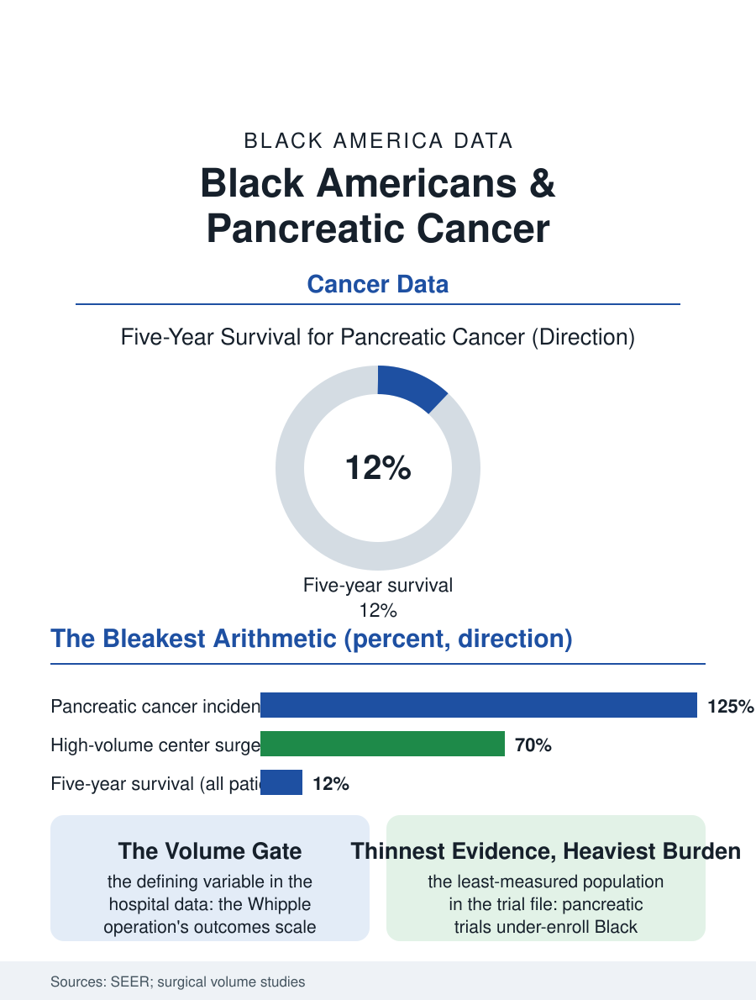

Black Public Health
The Bleakest Arithmetic: Black Americans and Pancreatic Cancer
Highest incidence, the bleakest survival, and the cure window gated by volume, trial, and genetic testing. The pancreatic file.

Pancreatic cancer is the oncology file's bleakest entry: the five-year survival in the single digits nationally in the older data and rising only slowly in the current era, its incidence in Black Americans the highest of any group, its mortality higher still, its risk profile and its treatment access composing a file in which the disease's biology and the system's delivery both run against the patient. This article reads the pancreatic file.
The Risk Profile's Two Halves
The risk data give the incidence's two halves: the modifiable half, the smoking file's decades of exposure, the diabetes and obesity files' metabolic contribution, the chronic pancreatitis of the alcohol file, and the genetic half, the hereditary syndromes, BRCA and the pancreatic cancer families, whose testing and cascade screening the genetics file distributes by the access map. The incidence registry data place Black men and women at the top of the table, the gap against the white rate wider than for most cancers in this section's survey, and the stage file compounds it, the Black patient presenting with the distant disease at higher rates in the SEER stage tables, the diagnosis's own timing being, in this cancer's biology, nearly the whole prognosis, since the resectable window is measured in the tumor's anatomy at presentation and the operation's eligibility is the survival's gate. The surgical file is the file's defining variable: the pancreatic resection, the Whipple operation, is among surgery's most demanding, performed best at the high-volume centers whose outcomes the volume literature establishes, and the Black patient's probability of reaching the high-volume center in the hospital data is the file's delivery datum, with the referral's geography and the insurance's authorization composing the gate. The new-onset diabetes signal deserves the file's specific mention, because the pancreatic tumor declares itself through the sugar in a meaningful share of cases, the diabetic file's own patients constituting the surveillance cohort the early detection research now studies, so that the metabolic clinic may yet become the cancer's unlikely watchtower.
The Volume and the Trial
The treatment ladder above the surgery is the systemic therapy's, the multi-drug regimens of the current era that extended the metastatic survival by months in the trials, and the clinical trial enrollment file for pancreatic cancer, the trials file's thinnest, under-enrolls the Black patient at the rates the oncology literature records as the field's standing embarrassment, so that the regimens' real-world performance in the highest-burden population is the least measured. The genetic testing file adds its own gradient: the germline testing that opens the targeted therapies and the family cascade is ordered at lower rates for the Black patient in the oncology practice data, the targeted option's door being the genetic report the system failed to write. The palliative file is, for this cancer, the main file for most patients, the pain and nutrition and biliary obstruction management that decides the months' quality, and its delivery distribution, the hospice enrollment's timing and the symptom services' reach, is the file's humane ledger, measured in the claims data's last ninety days.
The Bleakest Arithmetic
The pancreatic file closes on the arithmetic the field itself states: the incidence gap is modest compared with the survival gap, because the survival's determinants, the stage, the volume center, the trial, and the genetic door, are each an access file in disguise, and the cumulative effect of small access gaps on a cancer whose cure window is weeks is the section's purest demonstration of the cascade's power. The research frontier, the early detection biomarkers the laboratories are validating in the high-risk cohorts, offers the file's only structural hope, and its validation cohorts' composition, per the trials file's rule, will decide whether the hope arrives for the population the disease already chose. The registries count the cases and the deaths in the thousands each year. The file's last entry is the resection's calendar, the operation scheduled at the volume center within the window the anatomy allows, for the patient whose referral reached it in time, which is the file's whole measure in a single appointment, and the reason its gradient, though the cancer is rare, is the section's most honest one. The window is the prognosis.
More in Black Public Health
Hypertension Among Black Adults: Prevalence, Control, and Consequences
About 55 percent of Black adults have hypertension — the highest rate of any U.S. group. Prevalence, onset, control, and the stroke, heart, and kidney consequences in the data.
Diabetes Among Black Adults: Prevalence and Complications
Nearly one in five Black adults has diabetes, diagnosed or undiagnosed — and its complications fall with particular weight. The CDC data on prevalence, control, and outcomes.
Black Life Expectancy: The Gap at Birth and Its Causes
Black life expectancy at birth is about 73 years, roughly five years below the national figure — the summary measure of every health gap in this section. The CDC data.
Source: National Cancer Institute SEER program; pancreatic surgical volume and outcomes literature.